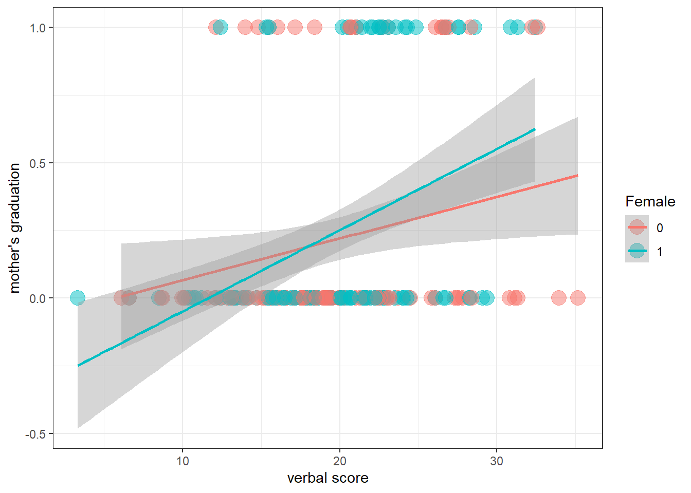

Reference 1:https://quantdev.ssri.psu.edu/tutorials/regression-continuous-count-and-binary-outcomes
reference 2: https://bookdown.org/ndphillips/YaRrr/logistic-regression-with-glmfamily-binomial.html
In this portfolio, I aimed to be familiar with regression, especially when the DV is non-normal. Especially, this project will investigate when the DV is binomial. (which menas that DV is just 0 or 1)
A conventional regression (OLS) assumes that DV is normally distributed. However, if DV is not normally distributed, it violates this assumption.
Of Course, if the sample size is large enough, linear regression remains sounds (source: https://iovs.arvojournals.org/article.aspx?articleid=2128171)
library(psych)## Warning: package 'psych' was built under R version 4.1.3library(ggplot2)## Warning: package 'ggplot2' was built under R version 4.1.3##
## Attaching package: 'ggplot2'## The following objects are masked from 'package:psych':
##
## %+%, alphalibrary(tidyverse)## -- Attaching packages --------------------------------------- tidyverse 1.3.1 --## v tibble 3.1.4 v dplyr 1.0.8
## v tidyr 1.2.0 v stringr 1.4.0
## v readr 2.1.2 v forcats 0.5.1
## v purrr 0.3.4## Warning: package 'tidyr' was built under R version 4.1.3## Warning: package 'readr' was built under R version 4.1.3## Warning: package 'dplyr' was built under R version 4.1.3## -- Conflicts ------------------------------------------ tidyverse_conflicts() --
## x ggplot2::%+%() masks psych::%+%()
## x ggplot2::alpha() masks psych::alpha()
## x dplyr::filter() masks stats::filter()
## x dplyr::lag() masks stats::lag()filepath <- "https://quantdev.ssri.psu.edu/sites/qdev/files/wisc3raw_gender.csv"
wisc3raw <- read.csv(file=url(filepath),header=TRUE)
## select the information that we need
wiscsub <- wisc3raw[ , c("id","verb1","verb2","verb4","verb6","momed","grad", "female")]
describe(wiscsub)## vars n mean sd median trimmed mad min max range skew
## id 1 204 102.50 59.03 102.50 102.50 75.61 1.00 204.00 203.00 0.00
## verb1 2 204 19.59 5.81 19.34 19.50 5.41 3.33 35.15 31.82 0.13
## verb2 3 204 25.42 6.11 25.98 25.40 6.57 5.95 39.85 33.90 -0.06
## verb4 4 204 32.61 7.32 32.82 32.42 7.18 12.60 52.84 40.24 0.23
## verb6 5 204 43.75 10.67 42.55 43.46 11.30 17.35 72.59 55.24 0.24
## momed 6 204 10.81 2.70 11.50 11.00 2.97 5.50 18.00 12.50 -0.36
## grad 7 204 0.23 0.42 0.00 0.16 0.00 0.00 1.00 1.00 1.30
## female 8 204 0.50 0.50 0.50 0.50 0.74 0.00 1.00 1.00 0.00
## kurtosis se
## id -1.22 4.13
## verb1 -0.05 0.41
## verb2 -0.34 0.43
## verb4 -0.08 0.51
## verb6 -0.36 0.75
## momed 0.01 0.19
## grad -0.30 0.03
## female -2.01 0.04If the outcome variable is binary, using the logistic link function seems to be recommended.
model1<-glm(grad~1 + verb1 + female + verb1*female,
famil='binomial',
data=wiscsub,
na.action=na.exclude)
summary(model1)##
## Call:
## glm(formula = grad ~ 1 + verb1 + female + verb1 * female, family = "binomial",
## data = wiscsub, na.action = na.exclude)
##
## Deviance Residuals:
## Min 1Q Median 3Q Max
## -1.4224 -0.6894 -0.5705 -0.2692 2.4419
##
## Coefficients:
## Estimate Std. Error z value Pr(>|z|)
## (Intercept) -3.16798 0.92043 -3.442 0.000578 ***
## verb1 0.09119 0.04146 2.200 0.027835 *
## female -2.32308 1.56331 -1.486 0.137279
## verb1:female 0.11490 0.06987 1.644 0.100080
## ---
## Signif. codes: 0 '***' 0.001 '**' 0.01 '*' 0.05 '.' 0.1 ' ' 1
##
## (Dispersion parameter for binomial family taken to be 1)
##
## Null deviance: 217.78 on 203 degrees of freedom
## Residual deviance: 194.79 on 200 degrees of freedom
## AIC: 202.79
##
## Number of Fisher Scoring iterations: 5coef(model1)## (Intercept) verb1 female verb1:female
## -3.16797968 0.09119357 -2.32307801 0.11489670exp(coef(model1))## (Intercept) verb1 female verb1:female
## 0.04208854 1.09548103 0.09797156 1.12175755This binomial regression modelded the variable to log(odds) to Y to be 1. To interpret easily, I put exp() function to the coef.
one unit increase in verb1 score may increase the odds of DV by 1.09538103.
ggplot(data=wiscsub,
aes(x=verb1, y=grad, color =factor(female)))+
geom_point(alpha=0.5, size=5) +
xlab("verbal score") +
ylab("mother's graduation")+
guides(color=guide_legend(title="Female"))+
theme_bw()+
stat_smooth(method='glm',methodarges=list(family='binomial',se=TRUE, fullrange=TRUE))## Warning: Ignoring unknown parameters: methodarges## `geom_smooth()` using formula 'y ~ x'
so far so good
This is the link functioin, the logit.
logit<-function(p){
log(p/(1-p))
}